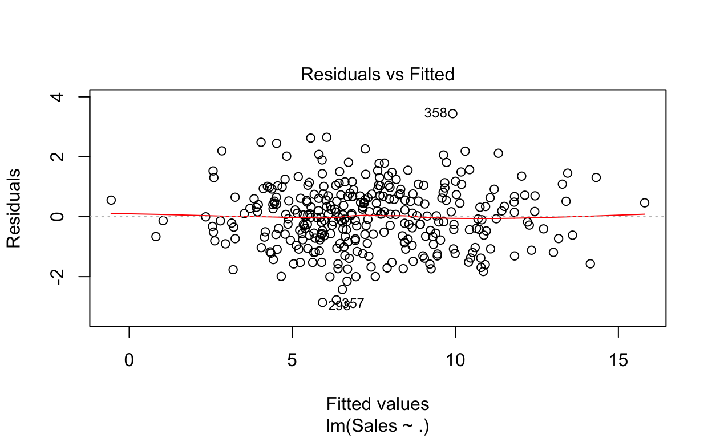
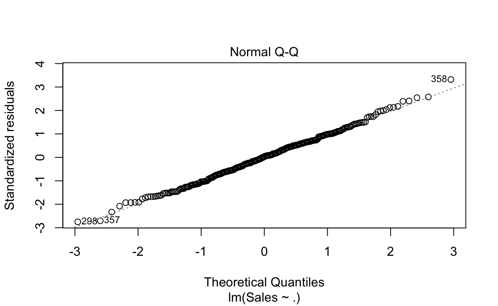
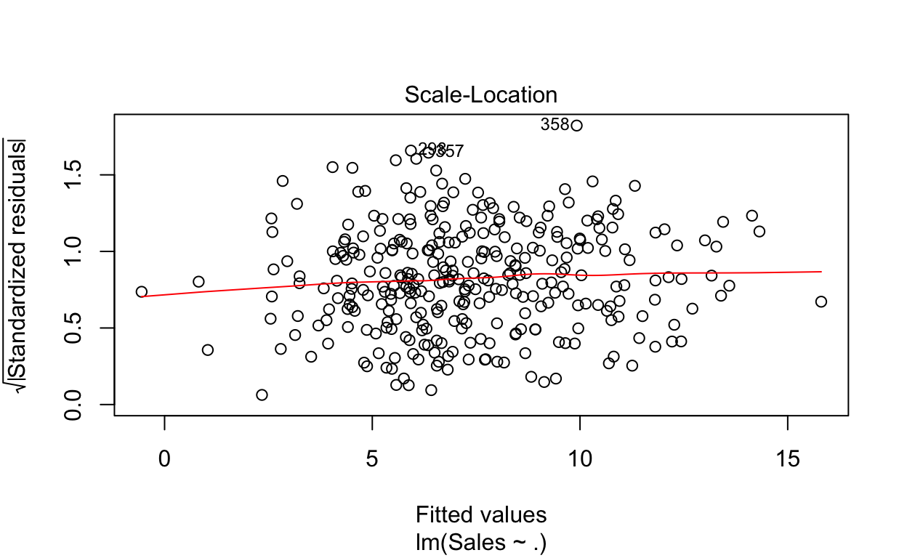
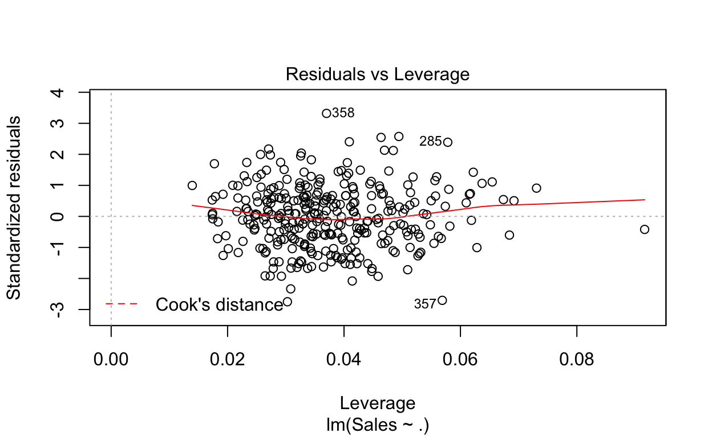

Neste post, vamos introduzir alguns conceitos para começar a trabalhar com modelos no R. Abordaremos o modelo linear de regressão utilizando a função lm(). Aprender a estrutura básica de modelos a partir do modelo linear será bastante útil para entender e utilizar outros modelos mais complexos.
Se você já tem uma noção do que é modelagem matemática, pule para o próximo tópico Dados.
Modelos são representações da realidade. São usados nas ciências sociais e exatas na tentativa de estudar e entender como o mundo funciona.
Um modelo matemático é uma representação, em linguagem matemática, do comportamento de algo. Por se tratar de representações, obviamente modelos matemáticos são bem mais simples do que a realidade, mas isso não significa dizer que um bom modelo não sirva para descrever e entender determinados aspectos e comportamentos reais.
Modelo de regressão linear talvez seja uma das formas mais simples de modelagem estatística. É uma abordagem que tenta representar a relação entre variáveis, uma chamada variável dependente (y), e uma ou mais denominadas de variáveis explicativas (x). Adicionalmente, o modelo também inclui um termo aleatório, o que o torna um modelo estatístico.
Usa-se o termo “regressão” pois o modelo tenta descrever o comportamento de y em relação a x em situações desconhecidas tomando como base situações conhecidas, ou seja, o modelo calcula um fator de forma que se você conhece o(s) valor(es) de x, consegue estimar o valor de y. O termo linear deve-se ao fato de como os parâmetros e o termo aleatório entram na equação estimada. A relação linear deve existir entre \(y\) e \(x\) ou entre \(y\) e alguma função de \(x\). Ou seja, se o modelo a ser estimado é \[ y_i = \alpha + \beta\ln(x_i) + e_i\], fica evidente que o efeito de \(x\) em \(y\) não é linear, mas o efeito de \(\ln(x)\), sim.
Também é importante notar que, como todo modelo, o modelo de regressão linear tem uma série de hipóteses, e as inferências em relação aos parâmetros são realizadas sob essas hipóteses. Se elas são violadas de alguma maneira, a inferência que está sendo realizada pode estar errada.
Feita essa pequena introdução sobre modelos, iremos para a parte prática de como estimar o modelo linear usando o R.
Primeiramente, precisaremos de uma base de dados para exemplificar como podemos usar um modelo no R. Vamos utilizar a base de dados Carseats que está disponível no pacote ISLR, que é um pacote complementar ao livro Introduction to Statistical Learning with Applications in R. Trata-se de um conjunto de dados simulados de vendas de cadeirinhas de carros para crianças. A tabela abaixo lista as variáveis presente nessa base de dados:
library(ISLR) # Instale o pacote se necessário install.packages("ISLR")
data("Carseats")| Nome | Descrição |
|---|---|
| Sales | Milhares de unidades vendidas em cada local |
| CompPrice | Preço cobrado pelo competidor em cada local |
| Income | Nível de renda local (milhares de dólares) |
| Advertising | Orçamento disponível para publicidade em cada local (milhares de dólares) |
| Population | Tamanho da população regional (mil) |
| Price | Preço da empresa em cada local |
| ShelveLoc | Fator com três níveis: ruim, bom e médio. Indica a qualidade do local da prateleira para as cadeiras de carro em cada loja |
| Age | Idade média da população local |
| Education | Nível educacional de cada local |
| Urban | Fator com dois níveis: sim e não. Indica se a loja está localizada em um área urbana ou rural |
| US | Fator com dois níveis: sim e não. Indica se a loja está localizada nos Estados Unidos ou não |
Para termos uma ideia da “cara” dos dados, vamos olhar as primeiras linhas usando o head().
head(Carseats)
Sales CompPrice Income Advertising Population Price ShelveLoc Age
1 9.50 138 73 11 276 120 Bad 42
2 11.22 111 48 16 260 83 Good 65
3 10.06 113 35 10 269 80 Medium 59
4 7.40 117 100 4 466 97 Medium 55
5 4.15 141 64 3 340 128 Bad 38
6 10.81 124 113 13 501 72 Bad 78
Education Urban US
1 17 Yes Yes
2 10 Yes Yes
3 12 Yes Yes
4 14 Yes Yes
5 13 Yes No
6 16 No YesEssa base dados é interessante, pois possui variáveis quantitativas e qualitativas/categóricas. Se você quiser ver algumas estatísticas sobre cada coluna dos seus dados, pode-se usar o summary().
summary(Carseats)
Sales CompPrice Income Advertising
Min. : 0.000 Min. : 77 Min. : 21.00 Min. : 0.000
1st Qu.: 5.390 1st Qu.:115 1st Qu.: 42.75 1st Qu.: 0.000
Median : 7.490 Median :125 Median : 69.00 Median : 5.000
Mean : 7.496 Mean :125 Mean : 68.66 Mean : 6.635
3rd Qu.: 9.320 3rd Qu.:135 3rd Qu.: 91.00 3rd Qu.:12.000
Max. :16.270 Max. :175 Max. :120.00 Max. :29.000
Population Price ShelveLoc Age
Min. : 10.0 Min. : 24.0 Bad : 96 Min. :25.00
1st Qu.:139.0 1st Qu.:100.0 Good : 85 1st Qu.:39.75
Median :272.0 Median :117.0 Medium:219 Median :54.50
Mean :264.8 Mean :115.8 Mean :53.32
3rd Qu.:398.5 3rd Qu.:131.0 3rd Qu.:66.00
Max. :509.0 Max. :191.0 Max. :80.00
Education Urban US
Min. :10.0 No :118 No :142
1st Qu.:12.0 Yes:282 Yes:258
Median :14.0
Mean :13.9
3rd Qu.:16.0
Max. :18.0 Usar o modelo de regressão linear no R é bastante simples. Vamos estimar um modelo linear (função lm()) em que a variável dependente (y) é a variável de vendas, Sales, e utilizaremos duas variáveis independentes (features), Price e CompPrice.
A função lm() utiliza a estrutura de fórmula para definição do modelo. Essa estrutura é uma organização muito comum em diversas funções de modelo no R. A estrutura de fórmula separa a variável dependente das demais variáveis explicativas pelo símbolo ~. À esquerda de ~ fica a variável dependente que você deseja estimar, e à direita as demais variáveis explicativas.
No parâmetro data, é informado o conjunto de dados que contém as variáveis que estão listadas na fórmula. Essa função possui outros parâmetros opcionais que estão listados no help (?lm).
Apesar de comum, é importante ressaltar que a estrutura de fórmula não é utilizada em todos os modelos no R. Em alguns casos, o modelo pode ser definido por dois parâmetros, x e y, que recebem os valores das variáveis independentes e dependente, respectivamente. Eventualmente, iremos trabalhar com algum modelo que está estruturado dessa forma. Podem existir outras formas de estruturação de um modelo no R, mas são mais raras.
Como dito, usar o modelo linear em R é muito simples:
fit <- lm(Sales ~ Price + CompPrice, data = Carseats)
fit
Call:
lm(formula = Sales ~ Price + CompPrice, data = Carseats)
Coefficients:
(Intercept) Price CompPrice
6.27869 -0.08746 0.09078 Bem, como quase tudo no R, não existe uma única forma de executar essa função. Você poderia estimar o modelo direto sem informar o parâmetro data:
fit <- lm(Carseats$Sales ~ Carseats$Price + Carseats$CompPrice)
fit
Call:
lm(formula = Carseats$Sales ~ Carseats$Price + Carseats$CompPrice)
Coefficients:
(Intercept) Carseats$Price Carseats$CompPrice
6.27869 -0.08746 0.09078 Percebeu que o resultado foi igual? Além disso, considerando que as vendas estão controladas só por esses dois fatores, você vê que as vendas são negativamente afetadas pelo próprio preço e positivamente afetas pelo preço do competidor. Porém, não estamos vendo os desvios-padrão para fazer a análise mais correta. Como fazer pra ver mais detalhes. Novamente, usaremos o summary().
fit <- lm(Sales ~ Price + CompPrice, data = Carseats)
summary(fit)
Call:
lm(formula = Sales ~ Price + CompPrice, data = Carseats)
Residuals:
Min 1Q Median 3Q Max
-5.5285 -1.6207 -0.2404 1.5269 6.2437
Coefficients:
Estimate Std. Error t value Pr(>|t|)
(Intercept) 6.278692 0.932774 6.731 5.91e-11 ***
Price -0.087458 0.005914 -14.788 < 2e-16 ***
CompPrice 0.090777 0.009132 9.941 < 2e-16 ***
---
Signif. codes: 0 '***' 0.001 '**' 0.01 '*' 0.05 '.' 0.1 ' ' 1
Residual standard error: 2.269 on 397 degrees of freedom
Multiple R-squared: 0.3578, Adjusted R-squared: 0.3546
F-statistic: 110.6 on 2 and 397 DF, p-value: < 2.2e-16Se você tiver que usar todas as variáveis e sua base dados possuir um grande número de colunas (variáveis), não é necessário explicitá-las uma a uma. Basta utilizar ..
fit <- lm(Sales ~ ., data = Carseats)
summary(fit)
Call:
lm(formula = Sales ~ ., data = Carseats)
Residuals:
Min 1Q Median 3Q Max
-2.8692 -0.6908 0.0211 0.6636 3.4115
Coefficients:
Estimate Std. Error t value Pr(>|t|)
(Intercept) 5.6606231 0.6034487 9.380 < 2e-16 ***
CompPrice 0.0928153 0.0041477 22.378 < 2e-16 ***
Income 0.0158028 0.0018451 8.565 2.58e-16 ***
Advertising 0.1230951 0.0111237 11.066 < 2e-16 ***
Population 0.0002079 0.0003705 0.561 0.575
Price -0.0953579 0.0026711 -35.700 < 2e-16 ***
ShelveLocGood 4.8501827 0.1531100 31.678 < 2e-16 ***
ShelveLocMedium 1.9567148 0.1261056 15.516 < 2e-16 ***
Age -0.0460452 0.0031817 -14.472 < 2e-16 ***
Education -0.0211018 0.0197205 -1.070 0.285
UrbanYes 0.1228864 0.1129761 1.088 0.277
USYes -0.1840928 0.1498423 -1.229 0.220
---
Signif. codes: 0 '***' 0.001 '**' 0.01 '*' 0.05 '.' 0.1 ' ' 1
Residual standard error: 1.019 on 388 degrees of freedom
Multiple R-squared: 0.8734, Adjusted R-squared: 0.8698
F-statistic: 243.4 on 11 and 388 DF, p-value: < 2.2e-16E se você quiser excluir alguma variável da análise? Da mesma forma que você utiliza o + pra adicionar variáveis, o - pode ser utilizado pra excluí-las.
fit <- lm(Sales ~ . - Urban, data = Carseats)
summary(fit)
Call:
lm(formula = Sales ~ . - Urban, data = Carseats)
Residuals:
Min 1Q Median 3Q Max
-2.8498 -0.6992 0.0300 0.6436 3.4616
Coefficients:
Estimate Std. Error t value Pr(>|t|)
(Intercept) 5.7267269 0.6005220 9.536 <2e-16 ***
CompPrice 0.0930440 0.0041433 22.457 <2e-16 ***
Income 0.0158656 0.0018447 8.601 <2e-16 ***
Advertising 0.1235923 0.0111169 11.118 <2e-16 ***
Population 0.0001822 0.0003698 0.493 0.622
Price -0.0953182 0.0026715 -35.680 <2e-16 ***
ShelveLocGood 4.8365318 0.1526307 31.688 <2e-16 ***
ShelveLocMedium 1.9458754 0.1257409 15.475 <2e-16 ***
Age -0.0459156 0.0031802 -14.438 <2e-16 ***
Education -0.0219546 0.0197095 -1.114 0.266
USYes -0.1836133 0.1498769 -1.225 0.221
---
Signif. codes: 0 '***' 0.001 '**' 0.01 '*' 0.05 '.' 0.1 ' ' 1
Residual standard error: 1.019 on 389 degrees of freedom
Multiple R-squared: 0.873, Adjusted R-squared: 0.8698
F-statistic: 267.5 on 10 and 389 DF, p-value: < 2.2e-16O objeto fit que foi criado a partir da função lm() carrega consigo uma série de resultados que podem ser recuperados a qualquer momento. Se você quiser acessar os resíduos, existem duas formas:
# vamos mostrar apenas os 10 primeiros
fit$residuals[1:10]
1 2 3 4 5 6
2.2886707 -1.1584731 0.8147224 -1.0624075 -1.9131450 1.0342126
7 8 9 10
0.4669361 0.3339878 0.3492739 -1.2152188
residuals(fit)[1:10]
1 2 3 4 5 6
2.2886707 -1.1584731 0.8147224 -1.0624075 -1.9131450 1.0342126
7 8 9 10
0.4669361 0.3339878 0.3492739 -1.2152188 Para acessar os valores previstos (com dados utilizados na estimação), também existem duas formas:
# vamos mostrar apenas os 10 primeiros
fit$fitted.values[1:10]
1 2 3 4 5 6 7
7.211329 12.378473 9.245278 8.462407 6.063145 9.775787 6.163064
8 9 10
11.516012 6.190726 5.905219
fitted(fit)[1:10]
1 2 3 4 5 6 7
7.211329 12.378473 9.245278 8.462407 6.063145 9.775787 6.163064
8 9 10
11.516012 6.190726 5.905219 O mesmo vale para acessar os coeficientes estimados.
coef(fit)
(Intercept) CompPrice Income Advertising
5.7267268794 0.0930440486 0.0158655664 0.1235923300
Population Price ShelveLocGood ShelveLocMedium
0.0001822397 -0.0953181549 4.8365318149 1.9458754343
Age Education USYes
-0.0459156254 -0.0219546072 -0.1836132570
fit$coefficients
(Intercept) CompPrice Income Advertising
5.7267268794 0.0930440486 0.0158655664 0.1235923300
Population Price ShelveLocGood ShelveLocMedium
0.0001822397 -0.0953181549 4.8365318149 1.9458754343
Age Education USYes
-0.0459156254 -0.0219546072 -0.1836132570 Para verificar tudo que está disponível no objeto fit, podemos listar seus nomes usando a função names(). O objeto fit é uma lista na verdade em que são alocados vários objetos de diversos tipos diferentes.
names(fit)
[1] "coefficients" "residuals" "effects" "rank"
[5] "fitted.values" "assign" "qr" "df.residual"
[9] "contrasts" "xlevels" "call" "terms"
[13] "model" Outro ponto importante é sobre o summary() aplicado ao fit. Como você notou, ele apresenta os resultados de uma maneira diferente. Para acessar os resultados do summary(fit), podemos fazer o seguinte:
summary.fit <- summary(fit)
names(summary.fit)
[1] "call" "terms" "residuals" "coefficients"
[5] "aliased" "sigma" "df" "r.squared"
[9] "adj.r.squared" "fstatistic" "cov.unscaled"
summary.fit$coefficients
Estimate Std. Error t value Pr(>|t|)
(Intercept) 5.7267268794 0.6005219791 9.5362486 1.650454e-19
CompPrice 0.0930440486 0.0041432948 22.4565357 3.210578e-72
Income 0.0158655664 0.0018446501 8.6008540 1.965977e-16
Advertising 0.1235923300 0.0111169041 11.1175134 4.032236e-25
Population 0.0001822397 0.0003697923 0.4928164 6.224204e-01
Price -0.0953181549 0.0026714558 -35.6802286 9.833525e-125
ShelveLocGood 4.8365318149 0.1526306709 31.6878107 8.259393e-110
ShelveLocMedium 1.9458754343 0.1257408746 15.4752815 1.955843e-42
Age -0.0459156254 0.0031802330 -14.4378181 3.870315e-38
Education -0.0219546072 0.0197095406 -1.1139076 2.660066e-01
USYes -0.1836132570 0.1498769114 -1.2250937 2.212812e-01
summary.fit$adj.r.squared
[1] 0.8697633Se você prestou atenção, você percebeu que o R tratou automaticamente as variáveis categóricas, escolhendo um nível como base e estimando um parâmetro para os demais níveis. O efeito seria o mesmo de você modificar sua base para transformar cada nível em uma variável dummy (0 ou 1) e excluir um determinado nível no momento de estimação do modelo.
O R automaticamente considera o primeiro nível como base. Veja que para a variável ShelveLoc o nível Bad foi escolhido como base. Para verificarmos se ele é realmente o primeiro nível, façamos o seguinte:
levels(Carseats$ShelveLoc)
[1] "Bad" "Good" "Medium"Para mudar o nível de referência, vamos utilizar a função contrast(). Basicamente, essa função irá criar os atributos que serão utilizados pela função lm() no momento de estimação do modelo. Por exemplo:
contrasts(Carseats$ShelveLoc)
Good Medium
Bad 0 0
Good 1 0
Medium 0 1Para alterar o nível de referência podemos a função contr.treatment():
contrasts(Carseats$ShelveLoc) <- contr.treatment(n = levels(Carseats$ShelveLoc),
base = 2)
contrasts(Carseats$ShelveLoc)
Bad Medium
Bad 1 0
Good 0 0
Medium 0 1Informamos quais eram os níveis e dissemos que queremos que o segundo (Good) seja usado como referência.
fit <- lm(Sales ~ ., data = Carseats)
summary(fit)
Call:
lm(formula = Sales ~ ., data = Carseats)
Residuals:
Min 1Q Median 3Q Max
-2.8692 -0.6908 0.0211 0.6636 3.4115
Coefficients:
Estimate Std. Error t value Pr(>|t|)
(Intercept) 10.5108058 0.6039582 17.403 < 2e-16 ***
CompPrice 0.0928153 0.0041477 22.378 < 2e-16 ***
Income 0.0158028 0.0018451 8.565 2.58e-16 ***
Advertising 0.1230951 0.0111237 11.066 < 2e-16 ***
Population 0.0002079 0.0003705 0.561 0.575
Price -0.0953579 0.0026711 -35.700 < 2e-16 ***
ShelveLocBad -4.8501827 0.1531100 -31.678 < 2e-16 ***
ShelveLocMedium -2.8934679 0.1308928 -22.106 < 2e-16 ***
Age -0.0460452 0.0031817 -14.472 < 2e-16 ***
Education -0.0211018 0.0197205 -1.070 0.285
UrbanYes 0.1228864 0.1129761 1.088 0.277
USYes -0.1840928 0.1498423 -1.229 0.220
---
Signif. codes: 0 '***' 0.001 '**' 0.01 '*' 0.05 '.' 0.1 ' ' 1
Residual standard error: 1.019 on 388 degrees of freedom
Multiple R-squared: 0.8734, Adjusted R-squared: 0.8698
F-statistic: 243.4 on 11 and 388 DF, p-value: < 2.2e-16Para retornar para estrutura de contrast padrão é preciso definir como NULL o atributo contrasts da variável ShelveLoc.
attr(Carseats$ShelveLoc, "contrasts") <- NULLPara realizar interações entre variáveis, utiliza-se o símbolo *. Ou seja, se você quiser a interação entre as variáveis V1 e V2 no seu modelo basta incluir V1 * V2 na fórmula do seu modelo.
Voltando ao nosso exemplo, podemos fazer a interação entre as variáveis Price e Urban da seguinte forma:
fit <- lm(Sales ~ . + Price*Urban, data = Carseats)
summary(fit)
Call:
lm(formula = Sales ~ . + Price * Urban, data = Carseats)
Residuals:
Min 1Q Median 3Q Max
-2.8723 -0.7011 0.0298 0.6723 3.3937
Coefficients:
Estimate Std. Error t value Pr(>|t|)
(Intercept) 5.5386942 0.7371346 7.514 4.02e-13 ***
CompPrice 0.0928744 0.0041576 22.338 < 2e-16 ***
Income 0.0157950 0.0018475 8.549 2.91e-16 ***
Advertising 0.1233524 0.0111724 11.041 < 2e-16 ***
Population 0.0002072 0.0003709 0.559 0.577
Price -0.0943707 0.0043411 -21.739 < 2e-16 ***
ShelveLocGood 4.8492903 0.1533223 31.628 < 2e-16 ***
ShelveLocMedium 1.9557229 0.1263016 15.485 < 2e-16 ***
Age -0.0461214 0.0031964 -14.429 < 2e-16 ***
Education -0.0206165 0.0198153 -1.040 0.299
UrbanYes 0.2845509 0.5712614 0.498 0.619
USYes -0.1855349 0.1501027 -1.236 0.217
Price:UrbanYes -0.0014091 0.0048808 -0.289 0.773
---
Signif. codes: 0 '***' 0.001 '**' 0.01 '*' 0.05 '.' 0.1 ' ' 1
Residual standard error: 1.02 on 387 degrees of freedom
Multiple R-squared: 0.8734, Adjusted R-squared: 0.8695
F-statistic: 222.6 on 12 and 387 DF, p-value: < 2.2e-16Um detalhe importante é que esse tipo de interação não funciona quando o objetivo é elevar uma variável contínuo ao quadrado. Por exemplo: Price * Price ou Price^2. Para conseguir obter o resultado pretendido usamos o I(.).
fit <- lm(Sales ~ . + I(Price^2), data = Carseats, x = TRUE)
summary(fit)
Call:
lm(formula = Sales ~ . + I(Price^2), data = Carseats, x = TRUE)
Residuals:
Min 1Q Median 3Q Max
-2.8593 -0.7138 0.0228 0.6729 3.3583
Coefficients:
Estimate Std. Error t value Pr(>|t|)
(Intercept) 6.247e+00 9.648e-01 6.475 2.87e-10 ***
CompPrice 9.296e-02 4.154e-03 22.379 < 2e-16 ***
Income 1.578e-02 1.846e-03 8.545 3.01e-16 ***
Advertising 1.232e-01 1.113e-02 11.070 < 2e-16 ***
Population 2.133e-04 3.707e-04 0.575 0.565
Price -1.060e-01 1.392e-02 -7.618 2.00e-13 ***
ShelveLocGood 4.845e+00 1.533e-01 31.602 < 2e-16 ***
ShelveLocMedium 1.957e+00 1.262e-01 15.513 < 2e-16 ***
Age -4.593e-02 3.187e-03 -14.412 < 2e-16 ***
Education -2.296e-02 1.987e-02 -1.155 0.249
UrbanYes 1.196e-01 1.131e-01 1.057 0.291
USYes -1.793e-01 1.500e-01 -1.195 0.233
I(Price^2) 4.638e-05 5.948e-05 0.780 0.436
---
Signif. codes: 0 '***' 0.001 '**' 0.01 '*' 0.05 '.' 0.1 ' ' 1
Residual standard error: 1.019 on 387 degrees of freedom
Multiple R-squared: 0.8736, Adjusted R-squared: 0.8697
F-statistic: 222.9 on 12 and 387 DF, p-value: < 2.2e-16Concluindo essa primeira explanação sobre modelos no R, vamos falar sobre predições. No caso, da função predict(). Como o summary(), a função predict() é uma função genérica. Isto significa que ela se adapta ao objeto que está sendo passado para função. Isto é, ela não é exclusiva da função lm(), podendo ser utilizada com outros modelos.
Vamos separar os dados em dois grupos, um para estimar o modelo e outro para realizar as predições. No desenvolvimento de modelos de aprendizado de máquina (machine learning) esses grupos são chamados, respectivamente, de grupo de treinamento e grupo de teste.
# Número de observações
N <- nrow(Carseats)
# Fixar a seed para reproduzir os resultados
set.seed(3943)
# índices para separar dados de treinamento/teste
idx <- sample(1:N, round(0.8*N), replace = FALSE)
# Base de dados de treinamento
Carseats.train <- Carseats[idx,]
# Base de dados de teste
# As linhas que estão listadas no objeto idx são excluídas
Carseats.test <- Carseats[-idx,]
# Estima o modelo
fit <- lm(Sales ~ ., data = Carseats.train)
# Predição a partir do modelo estimado
pred <- predict(object = fit, newdata = Carseats.test)
head(pred)
3 7 14 15 22 25
9.229138 6.157952 11.786486 9.517201 11.078857 10.037942 Um fato importante sobre o argumento newdata é que é necessário que ele possua todas as variáveis que estão no modelo original. Se mais variáveis forem providas, elas serão desconsideradas pela função.
Após a estimação do modelo, é comum verificar se algumas hipóteses realmente são válidas. Uma maneira informal de se fazer isso é checar alguns gráficos. O R fornece uma série de diagnósticos ao passar o objeto que contém o modelo estimado (fit no nosso caso) na função plot().
plot(fit)
A função retornará 4 gráficos que auxiliarão a análise sobre a violação de alguma hipótese. Testes formais também podem ser realizados, mas vamos nos restringir aqui a essa análise gráfica.
O primeiro plot (canto superior esquerdo) tem o objetivo de identificar a possível existência de não-linearidade nos dados.
O segundo gráfico tenta evidenciar se o resíduos são normalmente distribuídos. Se os valores se afastam da linha traçada, é sinal de não-normalidade dos resíduos.
O terceiro plot (canto inferior esquerdo) dá um indicativo sobre a violação ou não da hipótese de homocedasticidade (variância constante do termo aleatório). Quanto mais horizontal for a linha vermelha, mais forte é a evidência de homocedasticidade.
Por último, o quarto gráfico auxilia a identificação de pontos (valores extremos ou outliers) que influenciam consideravelmente a reta de regressão. Nem todo outlier afetará a reta, mas aqueles que alteram podem afetar consideravelmente o poder de generalização do modelo. Assim, pode ser necessário excluí-los do processo de estimação do modelo.
No nosso caso, os limites calculados para identificação de outliers não aparecem no gráfico, indicando que não há valores extremos que estão influenciando a reta estimada. No entanto, caso esse limite apareça e algum ponto esteja além desse limite, há indicação de que aquele ponto pode estar exercendo influência sobre a reta.
Para testes formais, dê uma olhada no pacote lmtest.
Nosso objetivo com esse post foi explicar o uso básico de modelos no R com a função lm(). Interpretar os resultados de um modelo envolvem alguns conceitos estatísticos que talvez mereçam posts específicos.
Porém, para ajudar no entendimento e dar mais sentido à alguns detalhes do summary() usado para ver resultados de um modelo, segue alguns links com ótimas explicações de como entender e interpretar modelos.
A ideia até aqui é que tenha sido quebrada a primeira barreira e que você já consiga estimar o modelo de regressão linear no R.
Provavelmente, você necessitará usar outros modelos nas suas análises, mas entender como funciona o modelo linear já é uma grande ajuda para estimação de diversos outros modelos.
Como dito, esse é um assunto que merece diversos outros posts mais detalhados e específicos, e eles virão com o tempo. Até lá, deixe seu comentário com sugestões ou dúvidas para que possamos ajudar!